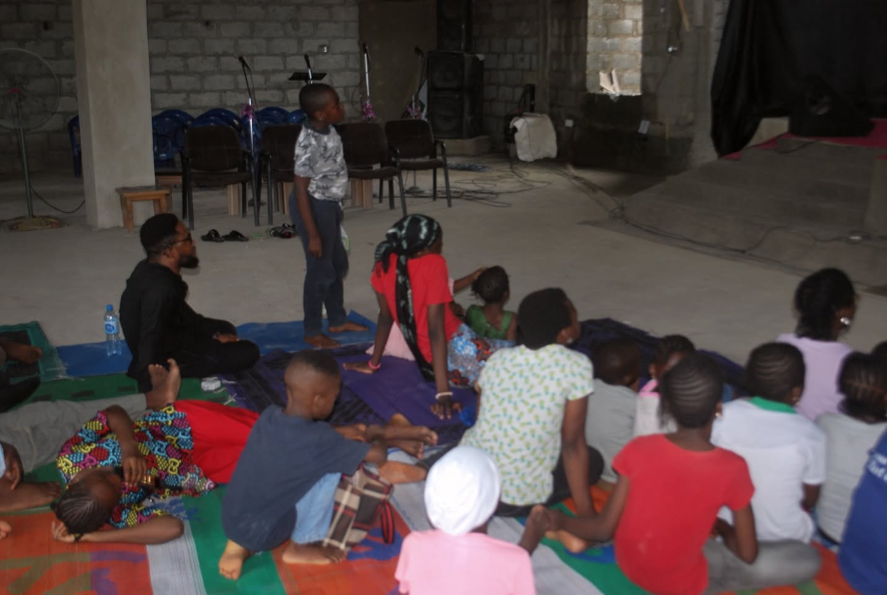

Bible learning
Teaching, Scripture memory, prayer and worship for children and teenagers.
Gatherings and programmesWe bring children and teenagers together to know God, grow in character and serve their community.
From weekly gatherings to school and community outreach, CTYBC supports children and teenagers as they learn, build relationships and practise service.
Teaching, Scripture memory, prayer and worship for children and teenagers.
Gatherings and programmesOutreach and community support shaped by the needs of young people and families.
Outreach recordExplore milestones, retreats, gatherings and photographs documented across the club’s history.
Read the chronology
2024 PICNIC · FACEBOOK ALBUMThe public album “2024 PICNIC” records a day of shared activities and community for CTYBC children and teenagers.
Explore real CTYBC photographsThe first screening took place on Saturday, 21 November 2026. Read CTYBC’s update for participants, families and supporters.
Your support helps CTYBC continue its work with children and teenagers. Contact the club to discuss a donation, sponsor an activity or explore a partnership.
CTYBC began in Abuja in 2014. Its public record includes an orphanage home outreach and prayer retreat in 2019, teenage classes online from 2022, and a 2024 picnic album. The archive is being expanded from dated public records and photographs.
Explore the history